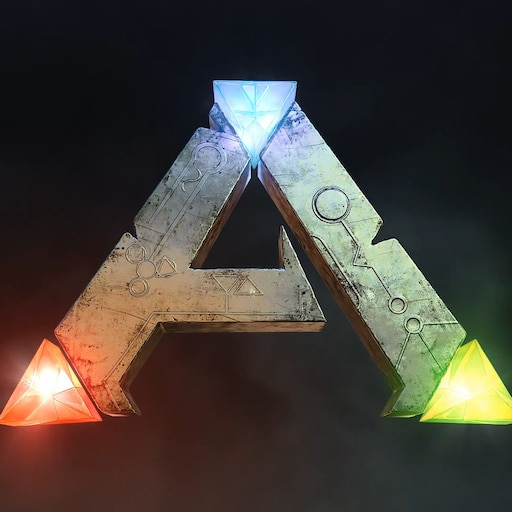
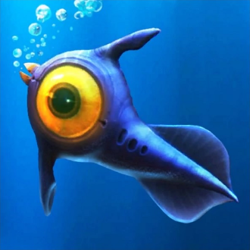

Recommendation Games
Genshin Impact
Game open-world action RPG dengan grafis ala anime yang sangat memukau. Kamu akan menjelajahi dunia fantasi luas bernama Teyvat, memecahkan teka-teki, dan mengalahkan musuh menggunakan kombinasi elemen sihir yang unik. Game ini juga gratis dimainkan!
Lihat Game
ARK: Survival Evolved
Petualangan survival epik di mana kamu terdampar di sebuah pulau misterius yang dipenuhi dinosaurus purba. Kamu dibebaskan untuk berburu, membangun markas megah, hingga menjinakkan dan menunggangi dinosaurus seperti T-Rex atau Pterodactyl.
Lihat Game
Subnautica
Game petualangan dan bertahan hidup yang berlatar di lautan planet alien. Kamu harus menyelam ke dasar laut dalam, mengumpulkan sumber daya, membangun pangkalan bawah air, sambil menghindari makhluk-makhluk laut raksasa yang menakutkan.
Lihat GameRed Dead Redemption 2
Sebuah mahakarya epik tentang kehidupan geng koboi di akhir era Wild West. Dunia terbukanya sangat hidup dan detail.
Lihat Game